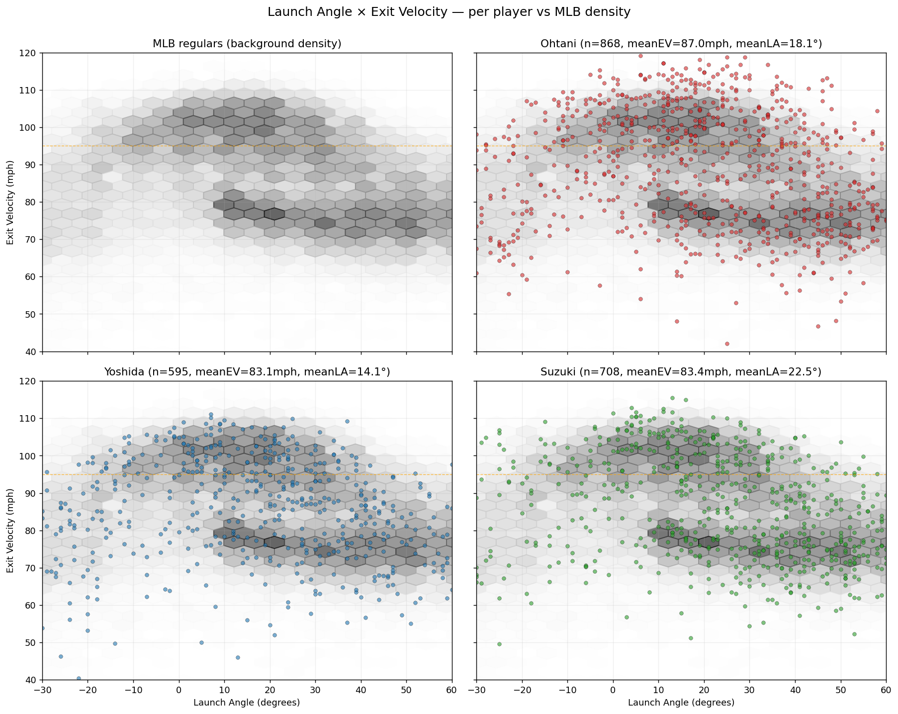
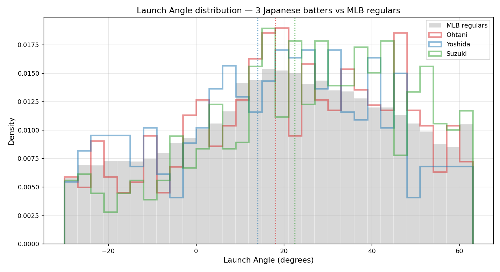
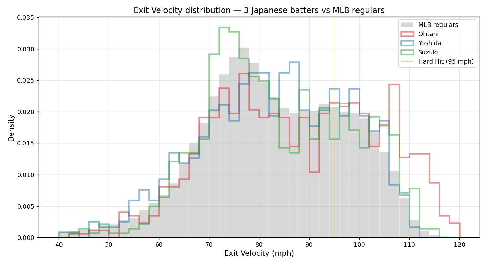
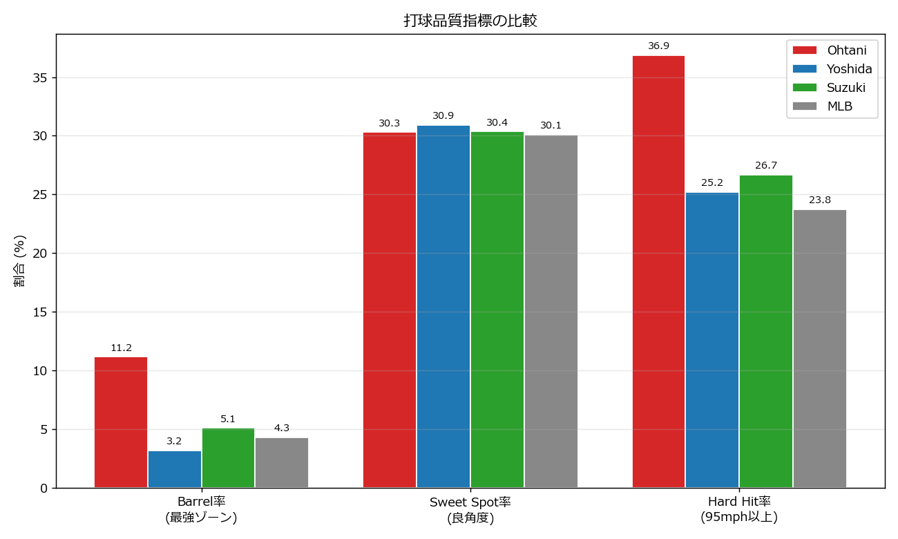
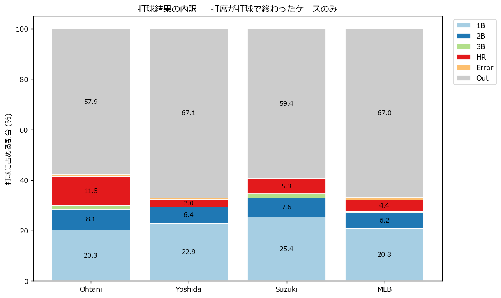
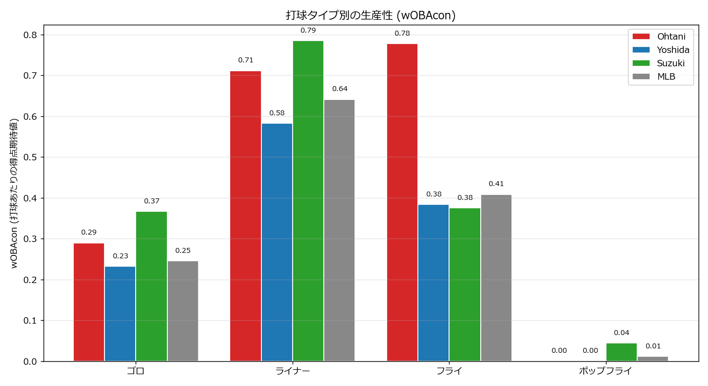

「日本人野手」と一括りにされがちな大谷・吉田・鈴木は、Statcast指標で見ると本当に共通点を持つのか。Launch Angle と Exit Velocity を軸に、3人の打撃を MLB レギュラー級の母集団と比較した。
何を、どこから、どう取ったか
| データソース | Baseball Savant (Statcast) · pybaseball 経由 |
| 対象シーズン | 2024年レギュラーシーズン (3/28 〜 9/30) |
| 対象選手 | Shohei Ohtani (660271) / Masataka Yoshida (807799) / Seiya Suzuki (673548) |
| 母集団 | 各月初1週間の計6週間サンプル(160,234球)から、30打球以上を記録した448選手 = 51,006打球 |
| 分析環境 | Python 3 / pandas / matplotlib (Meiryo) |
シーズン全体のリーグデータ(数百MB)を取得する代わりに、月初6週間分の打球サンプル(約16万球)を母集団とした。取得時間とサイズの両面から実用的で、レギュラー級打者の打球分布を捉えるには十分なサイズである。
Launch Angle と Exit Velocity が描く3者の地形図
背景の灰色は MLB レギュラーの打球密度。明確に2つの「島」が見える: 上の島(EV 95-105, LA 5-30°)は強打ゾーン、下の島(EV 70-80, LA 10-50°)は弱打ゾーン。3選手は 大谷が密度マップを上から覆い、吉田は強打ゾーンに重なり、鈴木は右側(高LA)に広がる。

3者三様が明確に出る。吉田(14.1°) は 0°付近に高い山で MLB平均より明確にゴロ寄り。大谷(18.1°) は MLB分布とほぼ同形で、MLB標準のスイング分布を完璧にコピー。鈴木(22.5°) は 30-50°帯がMLB平均より厚く、フライボーラーの特徴を持つ。

大谷の赤線が 105-115mph付近に第二の山(バイモーダル分布) を形成しているのが見える。MLB分布が95mphで急減衰するのに対し、大谷だけが「110mph前後の超高速打球」を量産している。これは MLB全体でも極めて稀な特徴。一方、吉田・鈴木は70-80mph帯がMLBより高く、95mph以上の右裾はMLBとほぼ同等 — コンタクトの「質」はMLB水準だが突出はしていない。

大谷の Exit Velocity 分布は二峰性(バイモーダル)。これは「並みの打球」と「異次元の打球」を打ち分けているのではなく、コンタクトしたボールに伝わる初速の絶対値そのものが他のMLB選手と桁違いに高いため、分布の右裾が異常に伸びていることを示す。
同じ角度、違うパワー
Statcastで打球の「質」を測る3つの指標 — Barrel率(最強ゾーンに入る打球の割合)、Sweet Spot率(良角度 8-32°の打球の割合)、Hard Hit率(95mph以上の打球の割合) — を比較する。

| 指標 | Ohtani | Yoshida | Suzuki | MLB |
|---|---|---|---|---|
| Barrel率(最強ゾーン) | 11.2% | 3.2% | 5.1% | 4.3% |
| Sweet Spot率(8-32°) | 30.3% | 30.9% | 30.4% | 30.1% |
| Hard Hit率(95mph+) | 36.9% | 25.2% | 26.7% | 23.8% |
SweetSpot% は全員ほぼ30%で完全に横並び。つまり「いい角度で打つ技術」は3選手とも MLB標準。しかし HardHit% と Barrel% で大谷だけが突き抜ける。
「打ち方の技術は同等。違うのはEVの絶対値だけ」 という構造が、これほどクリーンに数字で見えるとは思わなかった。
打球の特徴は、本当に成績に反映されているか
大谷のHR率はMLB平均の2.6倍。打球の9回に1回が本塁打というのは、選手というより現象に近い数字。一方、鈴木のヒット率(40.6%)は大谷(41.4%)に肉薄 — HRこそ少ないものの、打球の報われ方では大谷に迫っている。吉田のアウト率はMLB平均並みで、コンタクト型として標準的な分布。

| 結果 | Ohtani | Yoshida | Suzuki | MLB |
|---|---|---|---|---|
| 1B (単打) | 20.3% | 22.9% | 25.4% | 20.8% |
| 2B (二塁打) | 8.1% | 6.4% | 7.6% | 6.2% |
| HR (本塁打) | 11.5% | 3.0% | 5.9% | 4.4% |
| Out (アウト) | 57.9% | 67.1% | 59.4% | 67.0% |
wOBAcon は「打球が出たときの得点期待値」。打球タイプ別に見ると、鈴木のライナーwOBAcon 0.79 は3選手中トップ、大谷の0.71すら上回る。一方、鈴木のフライwOBAcon は MLB平均以下 (0.38 vs 0.41)。つまり鈴木は「フライ多めの実分布」と「フライの低生産性」にミスマッチがある。
対照的に、大谷のフライwOBAcon 0.78 は MLB平均(0.41)の約2倍。EVが圧倒的なため、フライが自動的に長打に変換される。吉田のフライwOBAcon 0.38 が MLB平均以下なので、彼が LA を低く抑えてゴロ・ライナーで結果を取る戦略は、データから見て合理的な選択である。

| 打球タイプ | Ohtani | Yoshida | Suzuki | MLB |
|---|---|---|---|---|
| ゴロ | 0.29 | 0.23 | 0.37 | 0.25 |
| ライナー | 0.71 | 0.58 | 0.79 | 0.64 |
| フライ | 0.78 | 0.38 | 0.38 | 0.41 |
| ポップフライ | 0.00 | 0.00 | 0.04 | 0.01 |
「日本人野手」という1つの括りは成り立たない
3人とも「日本人野手としてMLBに渡った」が、戦略は真逆。吉田は NPB型を維持、鈴木はフライ革命に乗り、大谷は技術はMLB標準で身体だけ別格。
ライナー wOBAcon が大谷を上回るのに、実分布はフライ寄り。LA を5°下げて狙いを変えれば、データ上はさらに伸びる余地がある。本人がどう判断するかは別の問題。